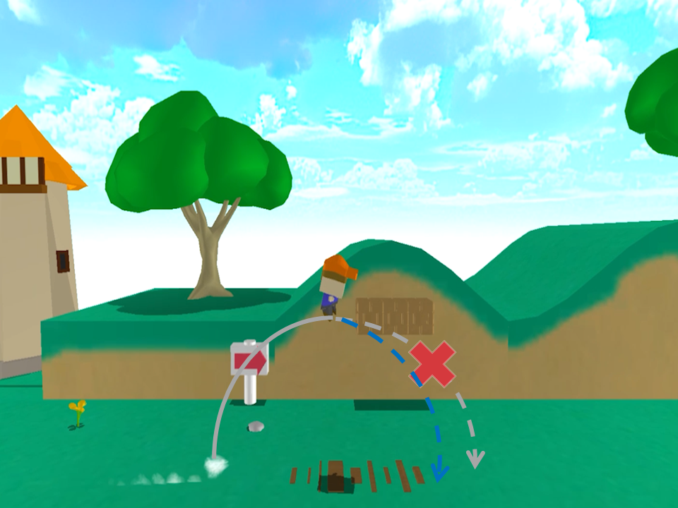
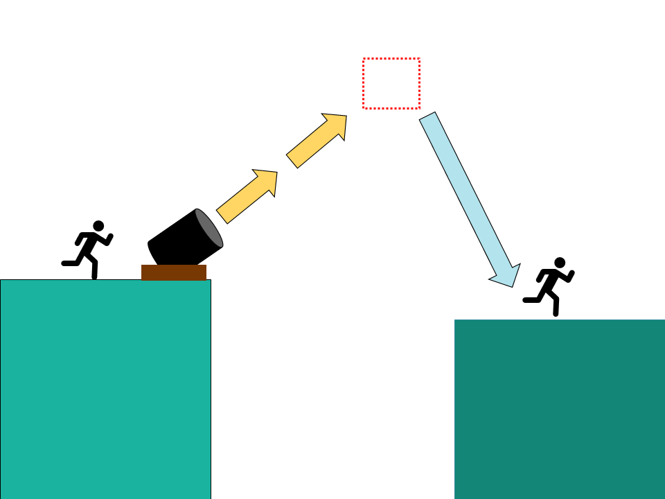

このゲームは、スーパーマリオ3Dワールドを参考にした3Dアクションゲームです。
学校内製のエンジンを元に作成
Bloom.h
Bloom.cpp
CollisionObject.h
CollisionObject.cpp
FontRender.h
FontRender.cpp
IRenderer.h
IRenderer.cpp
LightALL.h
LightALL.cpp
ModelRender.h
ModelRender.cpp
PostEffect.h
PostEffect.cpp
RenderingEngine.h
RenderingEngine.cpp
ShadowMapRender.h
ShadowMapRender.cpp
SkyCube.h
SkyCubr.cpp
SpriteRender.h
SpriteRender.cpp
DrawShadowMap.fx
gaussianBlur.fx
light.fx
model.fx
PostEffect.fx
SkyCubeMap.fx
sprite.fx
ZPrepass.fx
Visual Studio 2019
3ds Max 2021
blender
Adobe Photoshop
Effekseer
RenderDoc
C++
Windows10
DirectX12
1人
2022年9月～2023年2月
少年を操作し、ゴールにある宝石を手に入れよう。


一定時間操作していないと待機モーションが変化するようにしました。
移動をやめた時、現在の速度を徐々に落とす事で慣性が付くようにしました。
カメラの前、右方向とスティックの方向を使いプレイヤーの移動を実装しました。[1]
カメラ切り替え時、１フレーム前のカメラ方向を使い移動方向維持するようにしました。[2]
スティックの入力方向が変わるか、スティックを離すことで、現在のカメラ方向に移動方向が変わるようにしました。[3]


実際のゲーム画面
ジャンプボタンを押した時間によって、ジャンプ力を変化しました。
マリオのジャンプした時の軌道が放物線にならないのが特徴的です。これは、上昇速度と下降速度が異なるからです。
そこで、上昇中の重力を弱くし、下降中の重力を強くすることで、再現しました。

着地してから再度動けるようになる時間を設けました。
プレイヤーのモデルに合わせて、ローポリで作成しました。
画面に動きが欲しかったので、所々の背景モデルにアニメーションを追加しました。
プレイヤーが近づくと各鳥は規定の方向（今回は左斜め前）に飛び立つ。
プレイヤーと衝突（近づく）とプレイヤーの回転方向を 一度 だけ呼び出し、その方向に動かす。
（途中でプレイヤーの方向が変わると小石の方向も変わってしまう為、一度だけ）

プレイヤーが近づくと追いかけてくるように移動します。（XZ軸）

プレイヤーが近づくと追いかけてくるように移動します。
赤い敵とは違い、飛んで追いかけてくるためY軸も移動させるようにしました。
まったく同じ高さ（Y軸）になると敵を踏んで倒しにくいため、プレイヤーの少し下に追いかけてくるようにしています。

遠距離攻撃を行う敵とヒップドロップでしか倒せない敵が欲しかった為、制作しました。
プレイヤーが大砲に近づくと大砲のアニメーション再生され発射、 空中にある当たり判定 まで移動します。この時、重力を０にします。
そして、空中の当たり判定にプレイヤーが衝突すると、速度を徐々に落とします。また、この時に重力を元に戻すことで着地します。

所々でカメラの切り替えを行いました。